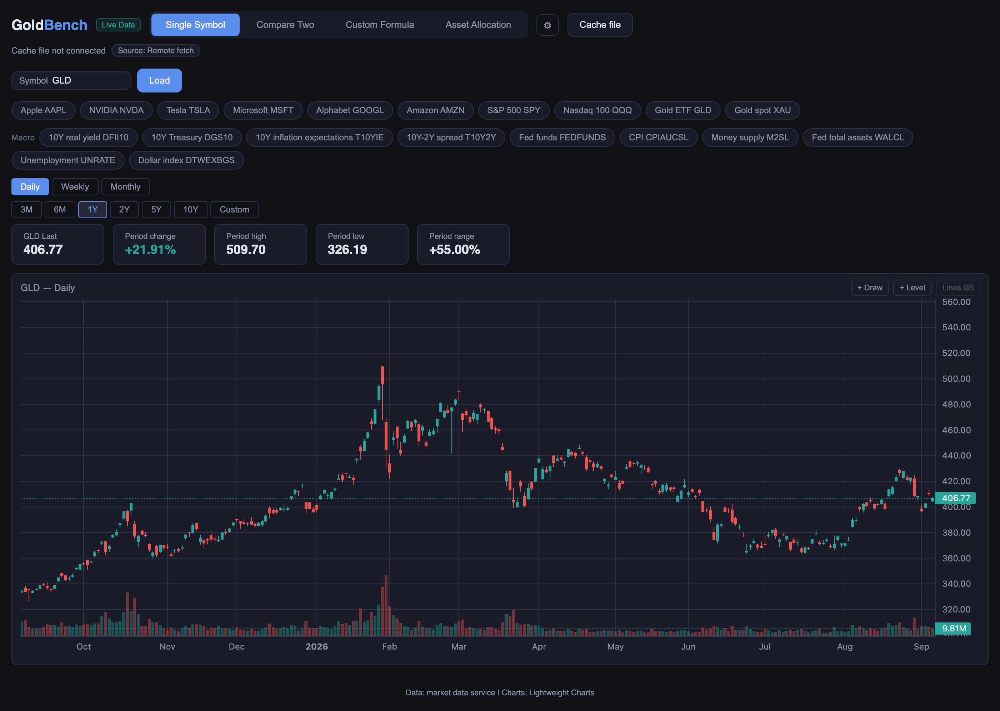

GoldBench
Market and macro charts · Browser and iPhone
Type a symbol and read it properly: candles, volume and the numbers for the period you picked. Draw on the chart, put two symbols against each other, or write an expression across several of them and chart the result.
- Stocks, ETFs, gold and economic indicators in one place
- Daily, weekly and monthly candles over ranges from three months to ten years
- Trend lines and price levels you can draw and keep
- Two-symbol comparison with a ratio chart, and custom expressions
